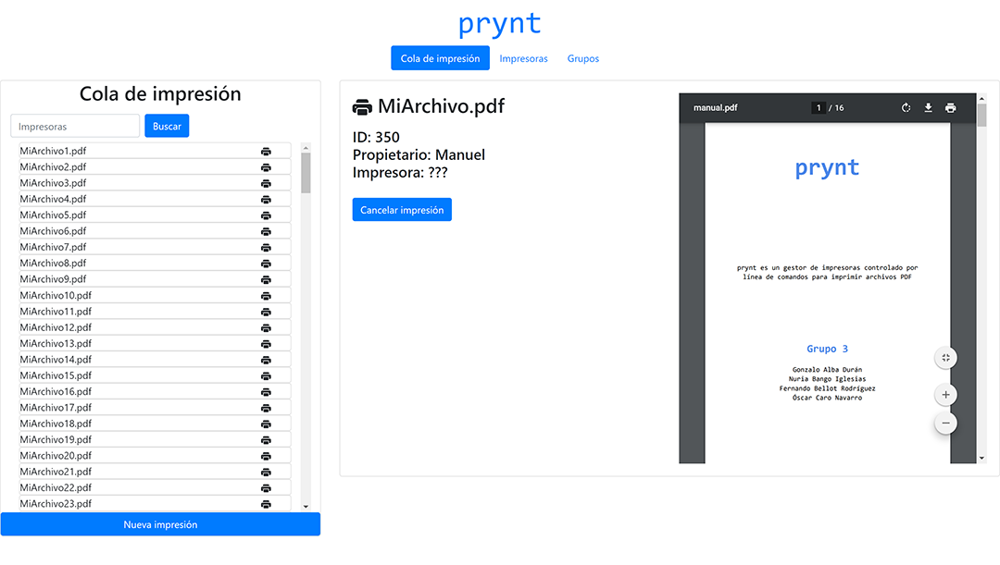
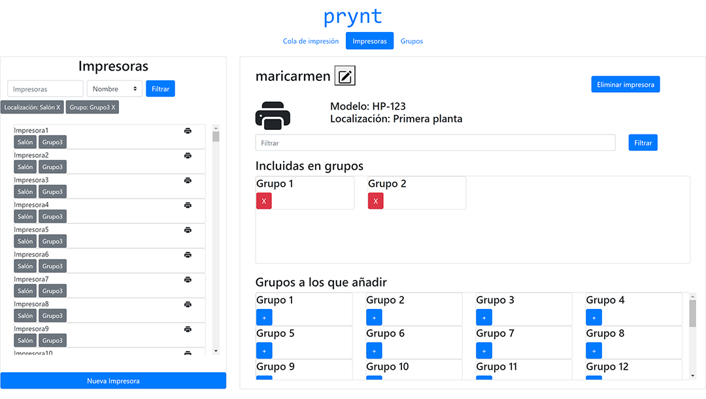
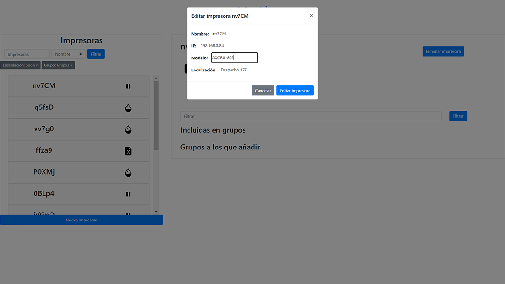

prynt
Cambios respecto a la anterior entrega
Respecto a la anterior entrega, hemos añadido interacciones a nuestra aplicación. En las tres pestañas se pueden interacionar con los elementos
del panel izquierdo para visualizar la información en el panel derecho.
Cola de impresión
Ahora en el panel izquierdo salen las impresoras generadas por la api con el símbolo de impresora si se está imprimiendo.
Además podemos interaccionar con los elementos de la lista mostrandose la información en el panel derecho:


Entrega anterior Entrega actual
Impresoras
Ahora en la pestaña de impresoras se pueden ver las impresoras generadas por la api y un símbolo al lado indicando el estado en el que se encuentran.
Al pulsar en uno de los elementos aparece un desplegable que permite ver los 5 primeros documentos que tiene la impresora en la cola de impresión y una etiqueta más indicando el número de documentos que faltan por mostrar.
Además tambien aparece la información de la impresora en el panel derecho junto con los botones de editar y eliminar impresora.


Entrega anterior Entrega actual
Grupos
En la pestaña de Grupos, al igual que en la de impresoras, tenemos en la lista de la izquierda los elementos desplegables que
nos muestran una previsualización de qué impresoras pertenecen al grupo seleccionado.
Además el panel de la derecha podemos ver la información dinámica relacionada con el grupo seleccionado.


Entrega anterior Entrega actual
Diálogos emergentes
Por último, en los diálogos emergentes aparece la información relacionada con la acción que hemos seleccionado.
En los siguientes ejemplos, podemos ver como la información de los diálogos corresponde con su información dinámica.
Especialmente en el ejemplo de editar una impresora, podemos ver como por defecto en el formulario aparecen los datos actuales.

Ejemplo de diálogo emergente de editar impresora Ejemplo de diálogo emergente de eliminar grupo
Tareas pendientes
Para continuar con la tarea de datos dinámicos tenemos que añadir tanto en la pestaña de impresoras como en la de grupos los paneles inferiores derechos
que muestran información relacionada con los filtros aplicados en la barra de filtrado. Por lo que cuando implementemos búsquedas y filrados podremos
completar esa información.